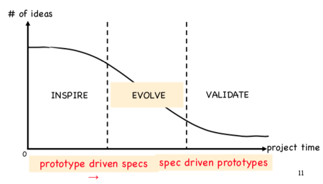

Prototype: representation of design before final version exists. Can be low fidelity to high fidelity media.
options for prototypes: sketches, diagrams, frameworks, hand made models, graphics, virtual models, role play, video, etc.
why? to evoke reactions from stakeholders (find out what to add/change), to test feasibility, choose between alternatives, etc. it's faster than changing the real thing.
Waterfall model
- long lifecycle, step by step
- does not work
Iterative prototyping
- more like an agile method
- each iteration is short (2-6 weeks)
- do minimum necessary
- after every iteration you get feedback
- system grows incrementally
quality is a function of num of iterations & refinements before production. fail early and often.
3 stages of prototyping:

choose what to prototype for, identify measurable design goals
Describe the user's journey:
- Who is the user?
-
How do they discover the app/site?
- let's assume for our project that they were recommended our app
- How do they use it?
- How do they benefit from it?
Aim to show why the app/site will work.
Prototyping:
-
Low fi (early stage)
- Use whatever works (paper and pen, photo, video, whatever)
- Paper prototypes: when you have many ideas, parts are unclear, basically if you're gonna throw away stuff
-
Medium fi
- Don't add filler text
- Wireframing: idea needs more detail than on paper, colors, clients need to see major design options
- Mockups with wood, play doh, whatever. Just fake the design
- Wizard of Oz: some aspects of interface are implemented, operation needs processing that's actually done by a human for now
-
High fi
- Screen mockups (illustrator, photoshop, whatever)
- Clickthroughs (slideshow type stuff)
- Web tools (like Bootstrap)
-
Web prototypes
- plain HTML/CSS
- use when systems is intended to run on the web
-
Small screen prototypes
- JS (all phones have a browser, JS has a lot of functionality)
- can add events, interactions, etc.
- you can use mobile emulators on desktop
- but it's hard to prototype touch gestures (JS works decently)